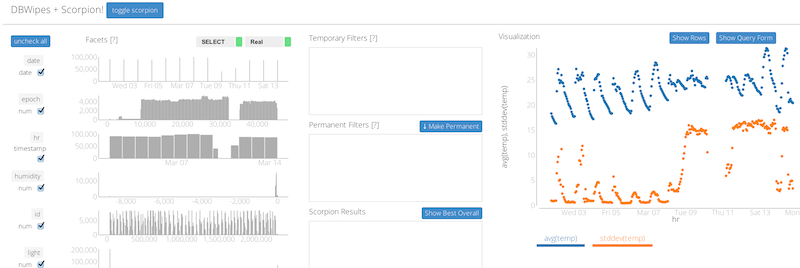

Visualize. Browse. Understand.
DBWipes and Scorpion help you quickly visualize your data, identify outliers, and understand where those outliers arise from in the underlying data set
DBWipes

DBWipes is a lightweight interactive visualization tool that lets users run aggregation queries over a database and interactively filter the dataset along different dimensions. Users can execute SQL GROUP-BY queries through a simple form interface, and render the results as a scatterplot. DBWipes renders a histogram of each attribute that users use to select and filter subsets of the attribute's values. Using this tool, users can easily compare the results of an aggregation query over different subsets of the data.
DBWipes currently connects to a PostgreSQL backend, which executes the queries that are issued by the interface.
Get DBWipes
DBWipes is a python web-application can be installed using pip:
pip install dbwipes
Check out the github page for code and usage instructions
Scorpion

Consider a simple analytic query that computes a company's total expenses by month, and shows that last month's expenses was unexpectedly high. The analyst will naturally want to understand why -- perhaps the company has put more resources into a new customer demographic, or a department is overspending.
Currently, the analyst must manually split the input data along different dimensions (e.g., dept, customer age), and hope that re-running the query will cause changes. If there is more than one outlier, or many dimensions in the dataset, this ad-hoc process quickly becomes untenable.
Scorpion is a library that helps answer these "why" questions. The user simply selects examples of outlier and normal results and Scorpion will look for subsets of the input table that potentially explains the outliers and finds a combination of attribute values (predicate) that describes that subset. To find such predicates, we develop a score for how much influence a predicate on the outliers, and design efficient algorithms to find predicates with lots of influence.
Get Scorpion
Scorpion is a python library that can be installed using pip:
pip install scorpion
After Scorpion is installed, DBWipes will be able to use the library to interactively explain outliers in its visualization.
Check out the github page for code and usage instructions.
User Study
We are currently running a user study of DBWipes and Scorpion. The study is a live DBWipes installation and includes a walk-through tutorial of the system, including the Scorpion plugin.
If you would like to participate in the study and try DBWipes and Scorpion on some data analysis tasks, please click the following button. Please note that we will log your interactions with the system to gather aggregated statistics.
Participate in Study